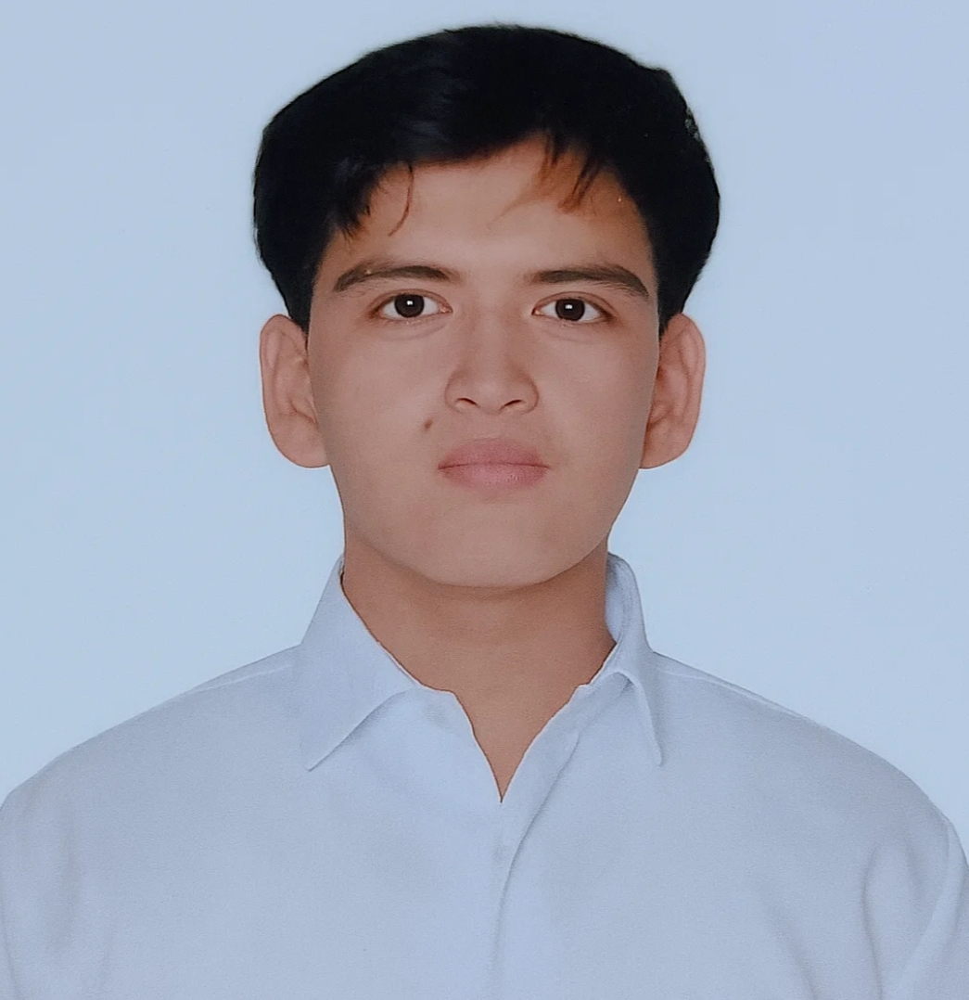

About
I’m Rayver John B. Leal. I was born on December 22, 2004, in San Felipe, San Manuel, Tarlac. I’m now 20 years old and living in Pallogan, Tagudin, Ilocos Sur. My life so far has been a journey of learning, growing, and discovering what I truly enjoy.
Childhood
I spent my early years in Ligaspi, San Manuel, Tarlac before my family moved to Pallogan, Tagudin, Ilocos Sur. That’s where I really grew up. My childhood was full of outdoor adventures running around, playing games, and having fun with friends. Those days really shaped who I am. I went to Pallogan Elementary School and then continued at Ambalayat Integrated School.
Hobbies
When I have free a time I read reading manga, playing games, or watching anime. These hobbies help me relax and bring me happiness.
Current Life & Dream
Right now, I’m continuing my education at ISPSC Tagudin College. My biggest goal is to finish college and see where life takes me from there. I’m not completely sure what my future career will be yet but I’m excited to explore different possibilities. Whatever path I choose I want to keep learning, growing, and making meaningful memories along the way.